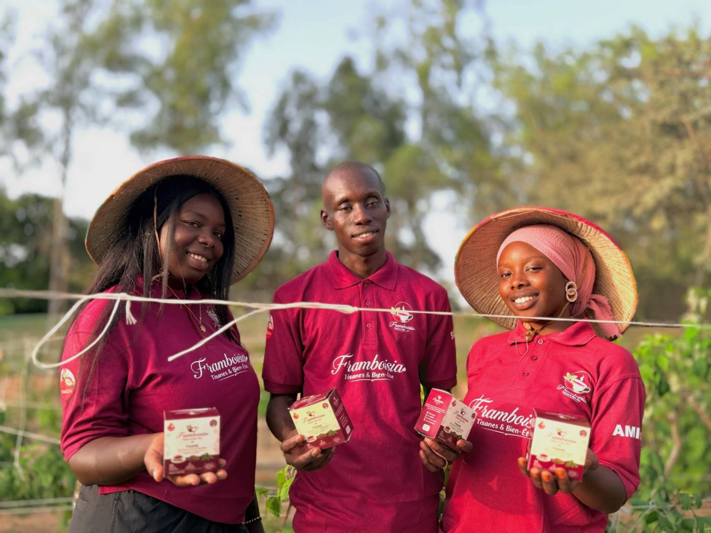
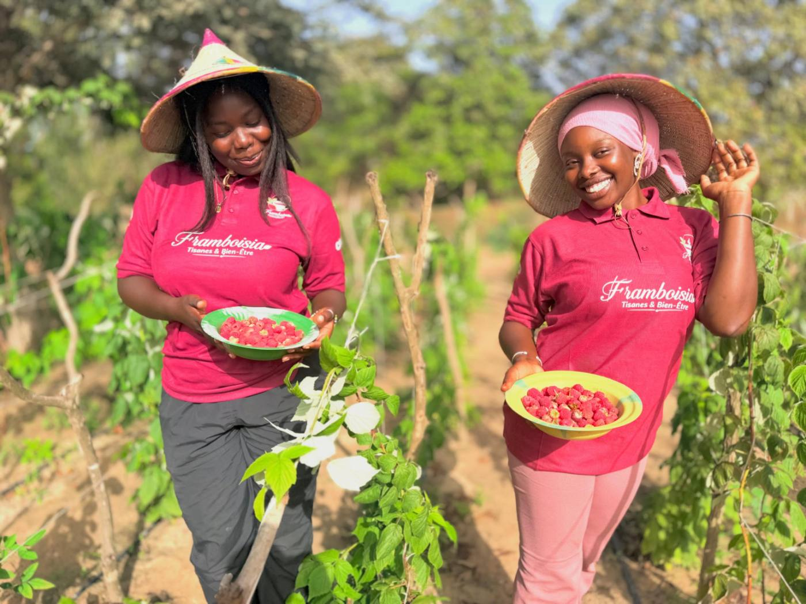
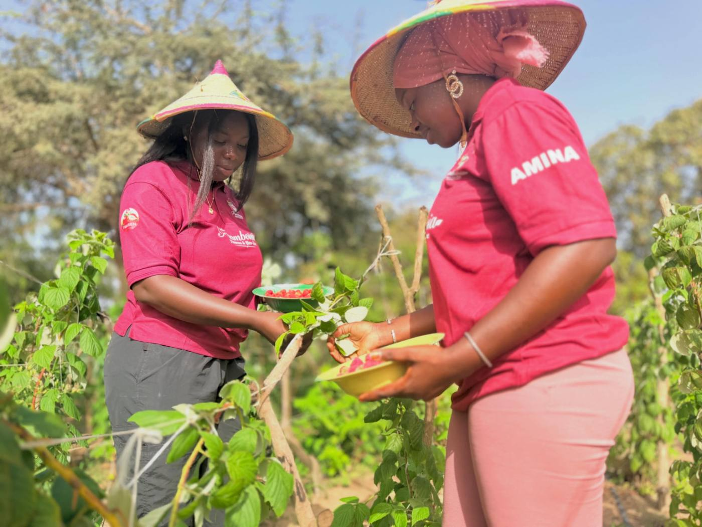
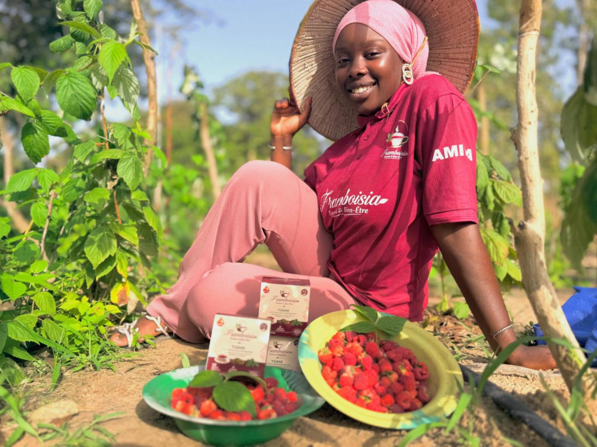
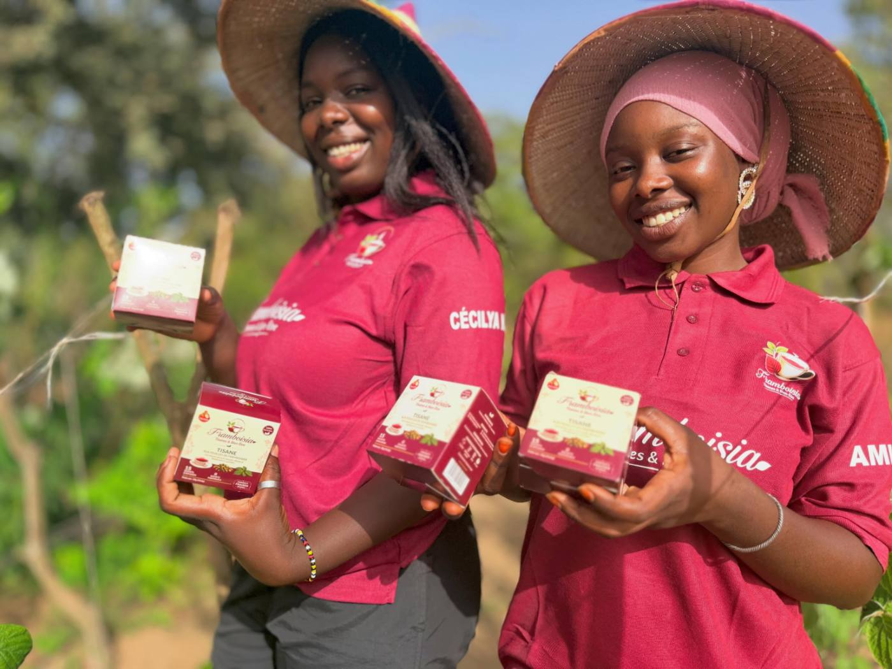
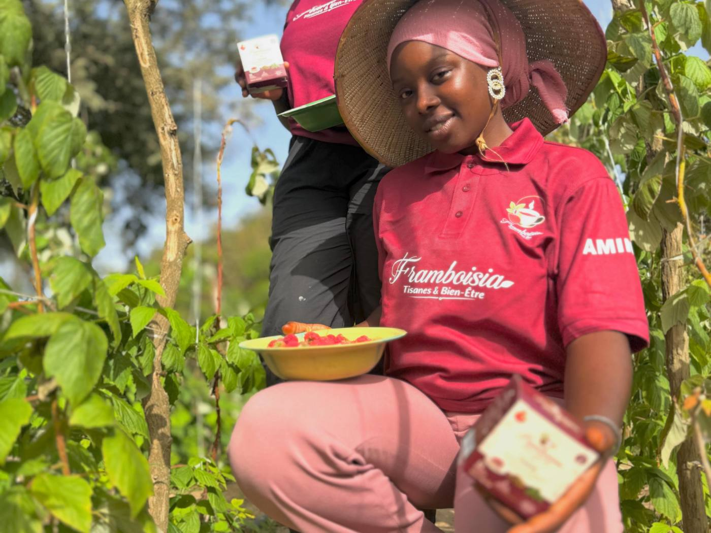
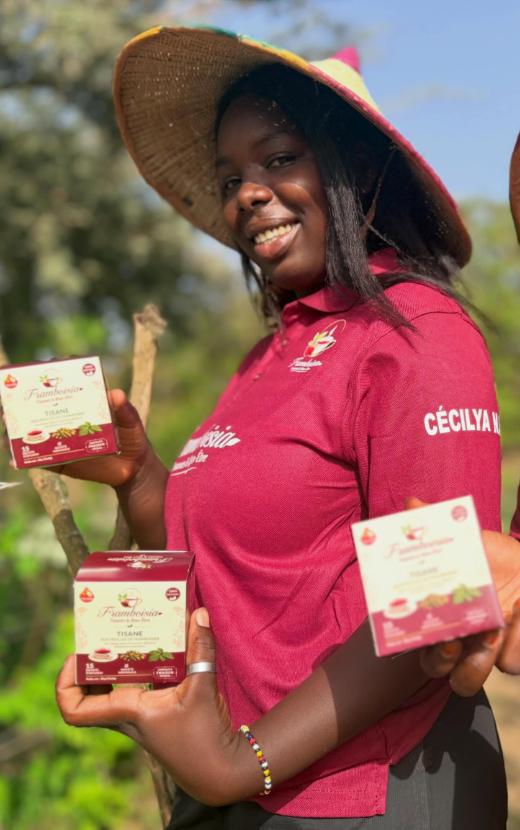
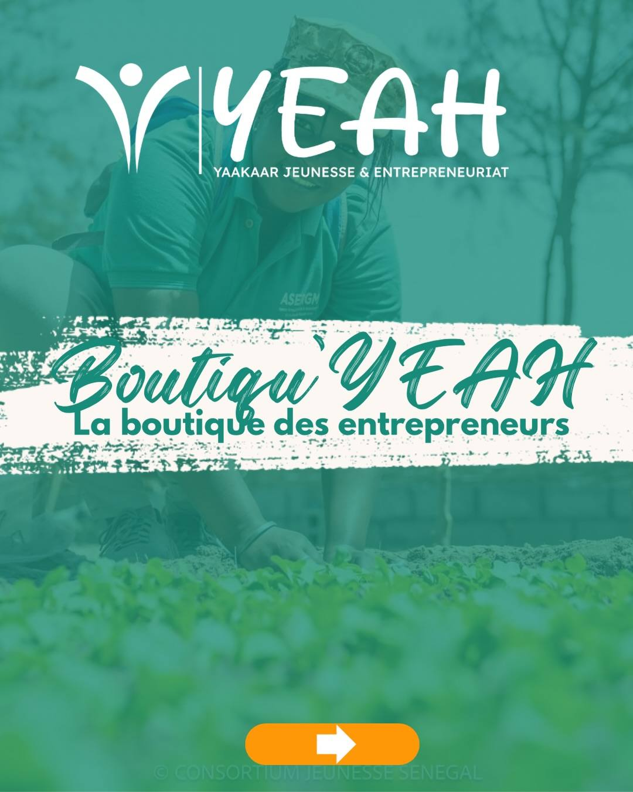

Les premières tisanes 100 % feuilles de framboisier au Sénégal
Framboisia a été créée par Amina et Cécilya, deux jeunes femmes formées par FRAISEN à Bayakh. La tisane est faite à base de feuilles de framboisier cultivées sur place, 100 % naturelle.

Fondateur de FRAISEN, formateur d'Amina et Cécilya
« Des jeunes formés par FRAISEN qui nous sortent les premières tisanes 100% feuilles de framboisiers au Sénégal. »
Deux jeunes filles aventurières qui suite à mes vidéos sur les réseaux sociaux ont décidé de faire la formation que propose FRAISEN pour espérer réaliser leur rêve.
Après leur formation elles ont décidé de loger sur place non loin de ma ferme pour mieux mûrir un projet de production de radis et de salade. À peine deux mois, leur attention s’oriente sur les framboisiers cultivés par FRAISEN. Après un partage avec elles sur les vertus et les opportunités des framboisiers elles ont décidé d’en faire un business. À ma grande surprise en moins d’un mois elle me présente un produit fini avec un packaging qui sort de l’ordinaire.
Ces jeunes filles prouvent que les jeunes sénégalais regorgent de talents et d’inspirations. Ils ont juste besoin d’un accompagnement pour s’affirmer.

01Culture
Les framboisiers poussent dans nos parcelles.

02Cueillette
Les feuilles sont cueillies à la main.

03Séchage
Séchées lentement pour garder leur goût.

04Mise en boîte
Conditionnées en sachets individuels.
L'équipe

Amina
Cofondatrice de Framboisia

Cécilya N.D.
Cofondatrice de Framboisia
Souleymane Agne
Fondateur de FRAISEN, formateur
Accompagnés par YEAH
Programme Yaakaar Jeunesse & Entrepreneuriat. Retrouvez nos tisanes à la Boutiqu'YEAH, la boutique des entrepreneurs.
